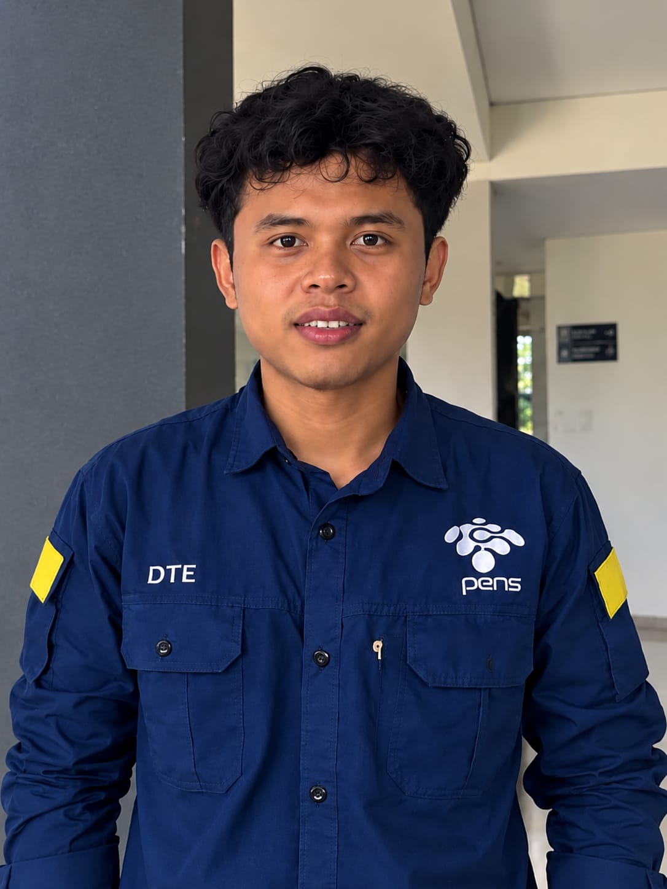
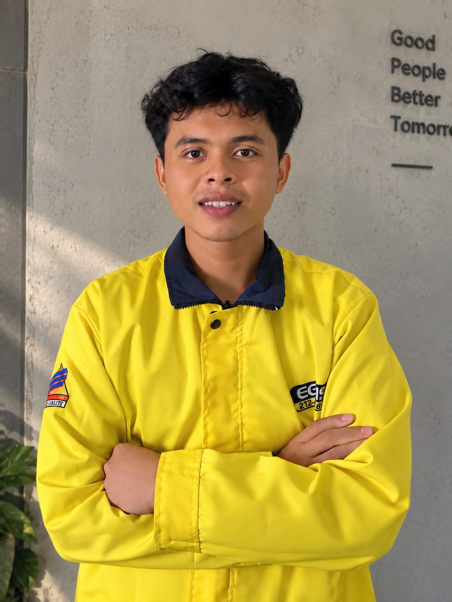
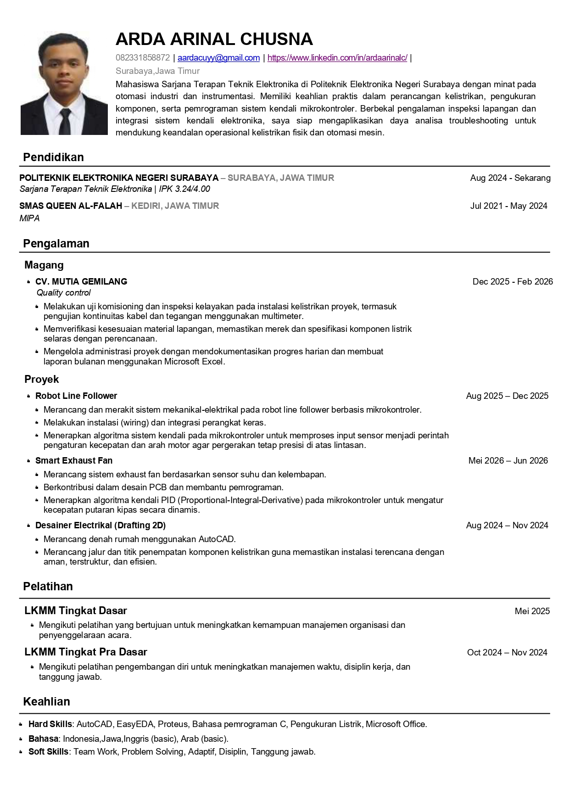

Mahasiswa Sarjana Terapan Teknik Elektronika PENS. Berminat pada perancangan kelistrikan, instrumentasi, otomasi industri, dan sistem kontrol.

Mahasiswa Sarjana Terapan Teknik Elektronika di Politeknik Elektronika Negeri Surabaya dengan minat pada otomasi industri dan instrumentasi. Memiliki keahlian praktis dalam perancangan kelistrikan, pengukuran komponen, serta pemrograman sistem kendali mikrokontroler. Berbekal pengalaman inspeksi lapangan dan integrasi sistem kendali elektronika, saya siap mengaplikasikan daya analisa troubleshooting untuk mendukung keandalan operasional kelistrikan fisik dan otomasi mesin.
Validasi kesiapan kerja: pengalaman riil di industri, bukan hanya ruang kelas.
🏢 CV. Mutia Gemilang
Bukti kemampuan problem solving — klik kartu untuk membuka detail teknis lengkap.
Validasi kompetensi — Klik sertifikat untuk memperbesar.

Saya tertarik berdiskusi tentang otomasi, instrumentasi, atau peluang kolaborasi.
Siap berkontribusi dalam perancangan sistem kontrol industri, drafting elektrikal, dan otomasi presisi di tim Anda. Pilih kanal favorit Anda:
